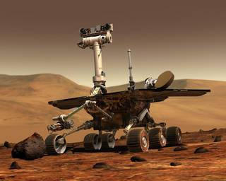

SPX Robotics
Robotics is the study of robots.
Robots are machines that can be used to do jobs.
Some robots can do work by themselves.
Other robots must always have a person telling them what to do.
Robotics is an interdisciplinary branch of engineering and science that includes mechanical engineering, electronics engineering, computer science, and others. Robotics deals with the design, construction, operation, and use of robots, as well as computer systems for their control, sensory feedback, and information processing.
These technologies are used to develop machines that can substitute for humans and replicate human actions. Robots can be used in any situation and for any purpose, but today many are used in dangerous environments (including bomb detection and de-activation), manufacturing processes, or where humans cannot survive. Robots can take on any form but some are made to resemble humans in appearance. This is said to help in the acceptance of a robot in certain replicative behaviors usually performed by people. Such robots attempt to replicate walking, lifting, speech, cognition, and basically anything a human can do. Many of today's robots are inspired by nature, contributing to the field of bio-inspired robotics.
The concept of creating machines that can operate autonomously dates back to classical times, but research into the functionality and potential uses of robots did not grow substantially until the 20th century. Throughout history, it has been frequently assumed that robots will one day be able to mimic human behavior and manage tasks in a human-like fashion. Today, robotics is a rapidly growing field, as technological advances continue; researching, designing, and building new robots serve various practical purposes, whether domestically, commercially, or militarily. Many robots are built to do jobs that are hazardous to people such as defusing bombs, finding survivors in unstable ruins, and exploring mines and shipwrecks. Robotics is also used in STEM (science, technology, engineering, and mathematics) as a teaching aid.
Robotics is a branch of engineering that involves the conception, design, manufacture, and operation of robots. This field overlaps with electronics, computer science, artificial intelligence, mechatronics, nanotechnology and bioengineering.

A nasa robot.
About arduino:
Arduino is an open-source electronics platform based on easy-to-use hardware and software. Arduino boards are able to read inputs - light on a sensor, a finger on a button, or a Twitter message - and turn it into an output - activating a motor, turning on an LED, publishing something online. You can tell your board what to do by sending a set of instructions to the microcontroller on the board. To do so you use the Arduino programming language (based on Wiring), and the Arduino Software (IDE), based on Processing.
Over the years Arduino has been the brain of thousands of projects, from everyday objects to complex scientific instruments. A worldwide community of makers - students, hobbyists, artists, programmers, and professionals - has gathered around this open-source platform, their contributions have added up to an incredible amount of accessible knowledge that can be of great help to novices and experts alike.
Arduino was born at the Ivrea Interaction Design Institute as an easy tool for fast prototyping, aimed at students without a background in electronics and programming. As soon as it reached a wider community, the Arduino board started changing to adapt to new needs and challenges, differentiating its offer from simple 8-bit boards to products for IoT applications, wearable, 3D printing, and embedded environments. All Arduino boards are completely open-source, empowering users to build them independently and eventually adapt them to their particular needs. The software, too, is open-source, and it is growing through the contributions of users worldwide.